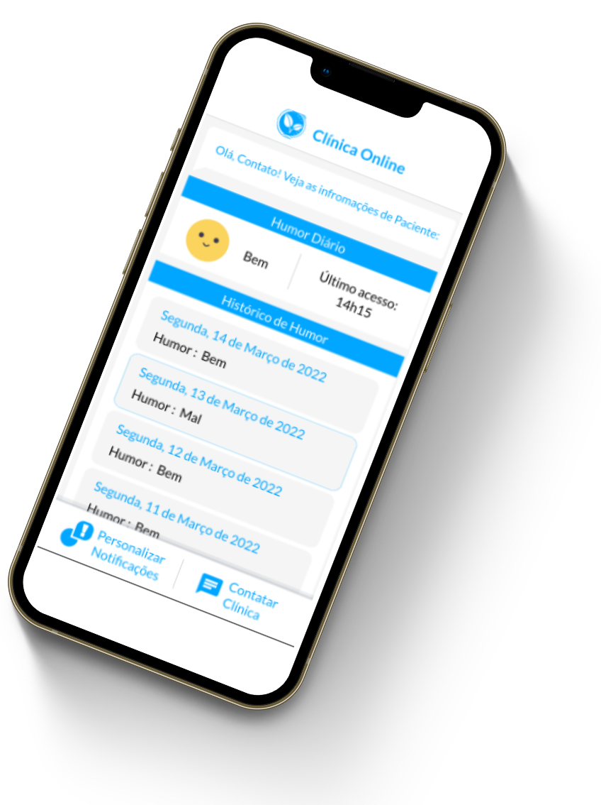
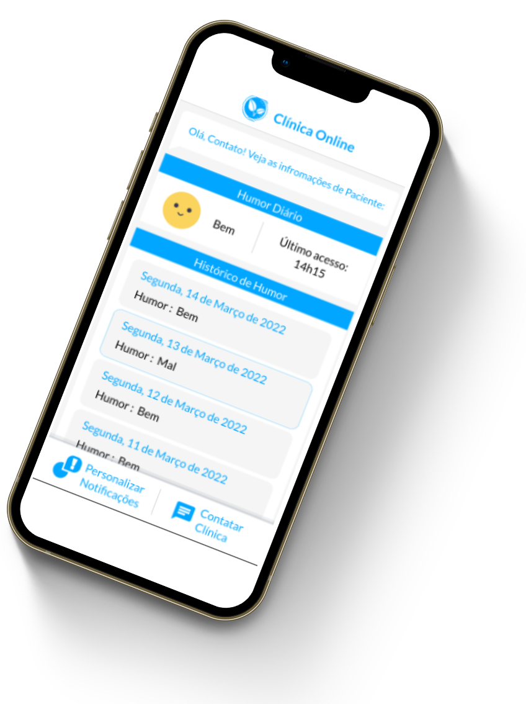

Sobre
A AJA surgiu em 2022 com objetivo de integrar tecnologia e saúde para desenvolver soluções modernas para facilitar o tratamento de pessoas. Assim, colaboramos com nossos parceiros para preservar a vida, oferecer mais bem estar e autonomia para nossos clientes. Somos uma empresa ao qual preza pelo bem estar e saúde de nós seres humanos e que deseja mostrar que a tecnologia é a principal aliada para o nosso futuro.
Inovação
Acreditamos que inovação é a exploração de novas ideias que de algum modo alcancem o sucesso.
Tecnologia
Para nós a tecnologia é o conjunto de métodos e técnicas que nos permitem te fazer chegar ao sucesso.
Humanização
Com humanização prezamos pela qualidade das relações entre as pessoas nos serviços de saúde.
AJA
Desenvolvendo softwares, criando bem estar
Nós da equipe AJA, contribuímos com a Agenda 2030 que possui um plano de ação global que reúne 17 objetivos de desenvolvimento sustentável, ao qual busca promover vida digna a todos. Comovidos com essa causa, temos como foco em nossos projetos contribuir com a ODS 3: “Saúde e bem estar”.
Equipe AJA
Nossos Trabalhos
Tera
Um Software para auxiliar clínicas de tratamento de dependência química a monitorar o estado de seus pacientes mesmo após sua alta. Assim, paciente, família e clínica são conectados nesse processo de reabilitação!
Sistema intuitivo de Smartwatch para monitorar estado de saúde do paciente
Um Dashboard demonstrará uma visão geral e gráficos dos dados dos pacientes ao monitor da clínica
Um aplicativo Mobile direcionado para os familiares permitirá que acompanhem o bem estar do paciente
 
